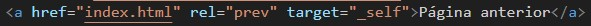
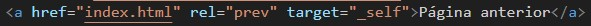

Como voltar para a página anterior.
Para voltar basta criar o mesmo código, porém utilizando rel="prev".
Para voltar clique no botão abaixo.

Para voltar basta criar o mesmo código, porém utilizando rel="prev".
Para voltar clique no botão abaixo.